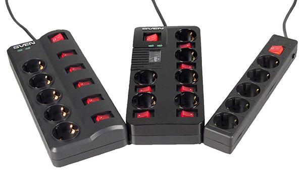
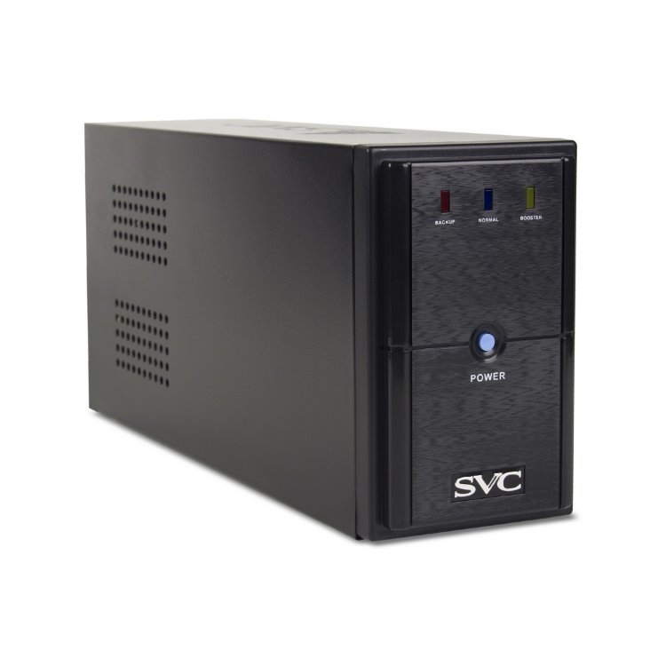

простейшие приборы для защиты входных цепей блока питания от высоких напряжений. Включаются между компьютером и сетевой розеткой и предназначены для поглощения высоковольтных выбросов напряжения, возникающих в сети в результате ударов молний или при работе мощных электрических машин. Устройства подавления выбросов обычно строятся на основе варисторов, которые могут понижать все скачки напряжения, превышающие определенный уровень.
Эти приборы выдерживают напряжения до 6 000 В и отводят на землю все напряжения, значения которых выше определенного предела, но очень сильные скачки (например, при прямом попадании молнии) могут их ―пробить .
Варисторы не могут рассеивать большую мощность и в такой ситуации обычно перегорают, т.е. после одного мощного или следующих друг за другом более слабых выбросов ограничитель перестает выполнять свои функции.
Ограничители выбросов в телефонной линии
Телефонные линии весьма уязвимы для молний, и подключенные к сетям модемы и компьютеры чаще всего выходят из строя именно по этой причине. Простейшие ограничители выбросов, которые включаются между телефонной линией и модемом, выпускаются несколькими фирмами.
Сетевые фильтры

предназначены для защиты подключенного оборудования, предохраняют компьютерные системы от повреждений при резком возрастании, выбросах и провалах напряжения сети.
Элементы подавления помех в сетевых фильтрах
автоматический выключатель (для отключения сети в случае короткого замыкания);
ограничитель напряжения(разрядники и варисторы).
собственно фильтр.
Источники бесперебойного питания ИБП

предназначены для защиты подключенного оборудования и поддержание работоспособности системы при исчезновении напряжения в сети в течение некоторого времени.
Существует два вида устройств такого типа:
-источники резервного питания (Standby Power Supply— SPS)
-источники бесперебойного питания (Uninterruptible Power Supply— UPS).
Источники бесперебойного питания классифицируют по принципу действия на три основные группы:
Off-Line (Standby Power Supply)
Line-Interactive
On-Line
Источник резервного питания (SPS)
Принцип действия:
SPS включается при отсутствии и снижении сетевого напряжения.
Срабатывает датчик.
Подключается аккумуляторная батарея к установленному в блоке преобразователю постоянного напряжения в переменное.
Начинает вырабатываться переменное напряжение, которое поступает на выход устройства, вместо сетевого.
Недостатки SPS:
переключение на резервное питание происходит недостаточно быстро, при этом компьютер может отключиться или перезагрузиться.
громоздкие устройства, т.к. в SPS устанавливаются высококачест-венные феррорезонансные стабилизаторы, позволяющие запасать некоторое количество энергии, используемой для питания компьютера во время переключения схемы.
Источники резервного питания типа Off-Line
Источники бесперебойного питания типа Off-Line (с отключением сети) стандартом определяются как пассивные, резервного действия (UPS-PSO).
Принцип действия:
В нормальном режиме: Фильтр - нагрузка;
При пропадании, завышении или понижении входного напряжения питание нагрузки электронным переключателем переводится на батарейное: Выпрямитель – батарея – инвертор - нагрузка. Поддерживается работа ПК в течение 5.. 10минут.
1. Недостатки источников резервного питания типа Off-Line
2. Невозможность своевременного восстановления емкости аккумуляторной батареи и при частых переходах на батарейное питание
Основное рекомендуемое их использование — устройства зашиты нагрузки с импульсным блоком питания с редкими отклонениями питающей сети.
Источники резервного питания линейно-интерактивного типа (Line- Interactive, иногда Ferroresonant)
выполняет не только функцию резервного источника питания, но и функцию зарядного устройства
Режимы работы
В режиме "normal" нагрузка питается от сети через основной "normal AC" вход ИБП. Одновременно инвертор, работая в реверсивном режиме как конвертор, производит заряд аккумулятора. Когда отсутствует напряжение на обоих входах, АБП переходит в режим "stored energy" и энергия, запасенная в аккумуляторе, через инвертор поступает в нагрузку. При этом коммутаторы, подключенные к входам АБП, разомкнуты. Если питающее напряжение отсутствует только на "normal AC" входе, то АБП переходит в режим "bypass". В этом режиме питание нагрузки осуществляется только от резервного источника сетевого напряжения, которое подается на "bypass AC" вход.
Применение: в системах щиты компьютерных сетей.
Одним из преимуществ данной архитектур является широкий диапазон допустимых входных напряжений.
Источник бесперебойного питания (UPS)
Назначение UPS :
выполняет функции фильтра стабилизатора и источника аварийного питания;
питание ПК постоянно осуществляется от аккумулятора
отсутствует переключатель : никаких переключений в схеме не происходит, а потому не возникает даже кратковременных провалов питающего напряжения;
Технология On-Line
С выпрямителя напряжение сети поступает на преобразователь постоянного напряжения высокого уровня к в низкое ПН1, а затем - на преобразователь постоянного напряжения в переменное выходное напряжение (ПН2). Преобразователь ПН2 — инвертор, питание на который подастся как от аккумуляторов, так и от сети через выпрямитель- преобразователь напряжения ПН1, включенных параллельно
• при нормальной входном переменном напряжении инвертор ПН2 питается от выпрямителя;
• при отклонениях в питающей электросети от нормы входное напряжение для ПН2 снимается с аккумуляторов.
Достоинства и недостатки ИБП архитектуры On-line
Достоинства: даже при незначительных отклонениях параметров входного напряжения от нормы эти устройства обеспечивают на выходе номинальное напряжение в пределах ±1...3%. Наличие обходной цепи (bypass) позволяет подключать нагрузку прямо к силовой сети. Качество питания и надежность поставки электроэнергии, предоставляемое устройствами с архитектурой этого типа, значительно выше, чем у предыдущих.
Недостатки ИБП : невысокий, по сравнению с ранее рассмотренными архитектурами, КПД (85...90%) и высокая цена.
Коэффициент искажения формы выходного напряжения(total harmonic distortion — THD)
Время переключения режимов(transfer time)
Допустимая нагрузка(aver load)
Время автономной работы (5...10 мин).
Срок службы батарей (4-5 лет)
Наличие холодного старта
Соединение ИБП с ПК
Часто задоваемы вопросы
1. Ограничители выбросов
2. Ограничители выбросов в телефонной сети
3. Сетевые фильтры стабилизаторы
4. Источники аварийного питания
- Источники резервного питания (SPS)
- Источники бесперебойного питания (UPS)
Простейшие приборы для защиты входных цепей блока питания от высоких напряжений. Включаются между компьютером и сетевой розеткой и предназначены для поглощения высоковольтных выбросов напряжения, возникающих в сети в результате ударов молний или при работе мощных электрических машин. Устройства подавления выбросов обычно строятся на основе варисторов, которые могут понижать все скачки напряжения, превышающие определенный уровень.
Предназначены для защиты подключенного оборудования, предохраняют компьютерные системы от повреждений при резком возрастании, выбросах и провалах напряжения сети.
предназначены для защиты подключенного оборудования и поддержание работоспособности системы при исчезновении напряжения в сети в течение некоторого времени.